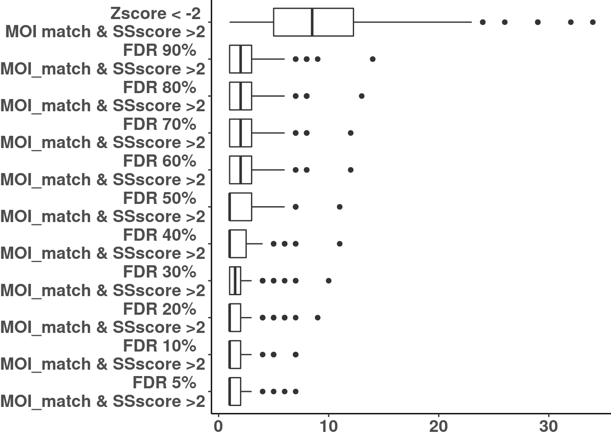

# Load config
source(snakemake@input$config)
# Load sample annotation
# sa <- fread('/s/project/mitoMultiOmics/multiOMICs_integration/raw_data/proteomics_annotation.tsv')
sa <- fread(snakemake@input$sample_annotation)
sa <- sa[USE_FOR_PROTEOMICS_PAPER == T]
sax <- sa[!is.na(CATEGORY), c("SAMPLE_ID", "KNOWN_MUTATION", "CATEGORY")]
Nsolved <- nrow(sa[CATEGORY %in% c( "I", "IIa", "III") ])
# Read integrated omics file
# rp <- readRDS("/s/project/mitoMultiOmics/multiOMICs_integration/processed_data/integration/patient_omics_full.RDS") %>% as.data.table()
rp <- readRDS(snakemake@input$patient_omics) %>% as.data.table()
# Annotate with mode of inferitance
rp[ ,MOI_match := F]
rp[MOI %like% "dominant" , MOI_match := T]
rp[potential_biallelic == T & MOI %like% "recessive" , MOI_match := T]
saz <- as.data.frame( sa[, SAMPLE_ID])
colnames(saz) <- "SAMPLE_ID"
os <- data.frame()
osx <- rp[ MOI_match == T & Semantic_sim > 4, .N, by = SAMPLE_ID]
osx <- as.data.table(merge(saz, osx, by = "SAMPLE_ID" ), all = T)
osx[is.na(N), N:= 0]
osx$N <- as.numeric(osx$N)
osx$type <- rep("MOI match & SSscore >4" ,nrow(osx ))
os <- rbind(os, osx)
osx <- rp[PROTEIN_PADJ <0.1 , .N, by = SAMPLE_ID]
osx <- as.data.table(merge(saz, osx, by = "SAMPLE_ID" ), all = T)
osx[is.na(N), N:= 0]
osx$N <- as.numeric(osx$N)
osx$type <- rep("FDR 10% (Protein outlier)" ,nrow(osx ))
os <- rbind(os, osx)
osx <- rp[PROTEIN_PADJ <0.05 & MOI_match == T & Semantic_sim > 2 , .N, by = SAMPLE_ID]
osx <- as.data.table(merge(saz, osx, by = "SAMPLE_ID" ), all = T)
osx[is.na(N), N:= 0]
osx$N <- as.numeric(osx$N)
osx$type <- rep("FDR 5% \nMOI_match & SSscore >2" ,nrow(osx ))
os <- rbind(os, osx)
osx <- rp[PROTEIN_PADJ <0.1 & MOI_match == T & Semantic_sim > 2 , .N, by = SAMPLE_ID]
osx <- as.data.table(merge(saz, osx, by = "SAMPLE_ID" ), all = T)
osx[is.na(N), N:= 0]
osx$N <- as.numeric(osx$N)
osx$type <- rep("FDR 10% \nMOI_match & SSscore >2" ,nrow(osx ))
os <- rbind(os, osx)
osx <- rp[PROTEIN_PADJ <0.2 & MOI_match == T & Semantic_sim > 2 , .N, by = SAMPLE_ID]
osx <- as.data.table(merge(saz, osx, by = "SAMPLE_ID" ), all = T)
osx[is.na(N), N:= 0]
osx$N <- as.numeric(osx$N)
osx$type <- rep("FDR 20% \nMOI_match & SSscore >2" ,nrow(osx ))
os <- rbind(os, osx)
osx <- rp[PROTEIN_PADJ <0.3 & MOI_match == T & Semantic_sim > 2 , .N, by = SAMPLE_ID]
osx <- as.data.table(merge(saz, osx, by = "SAMPLE_ID" ), all = T)
osx[is.na(N), N:= 0]
osx$N <- as.numeric(osx$N)
osx$type <- rep("FDR 30% \nMOI_match & SSscore >2" ,nrow(osx ))
os <- rbind(os, osx)
osx <- rp[PROTEIN_PADJ <0.4 & MOI_match == T & Semantic_sim > 2 , .N, by = SAMPLE_ID]
osx <- as.data.table(merge(saz, osx, by = "SAMPLE_ID" ), all = T)
osx[is.na(N), N:= 0]
osx$N <- as.numeric(osx$N)
osx$type <- rep("FDR 40% \nMOI_match & SSscore >2" ,nrow(osx ))
os <- rbind(os, osx)
osx <- rp[PROTEIN_PADJ <0.5 & MOI_match == T & Semantic_sim > 2 , .N, by = SAMPLE_ID]
osx <- as.data.table(merge(saz, osx, by = "SAMPLE_ID" ), all = T)
osx[is.na(N), N:= 0]
osx$N <- as.numeric(osx$N)
osx$type <- rep("FDR 50% \nMOI_match & SSscore >2" ,nrow(osx ))
os <- rbind(os, osx)
osx <- rp[PROTEIN_PADJ <0.6 & MOI_match == T & Semantic_sim > 2 , .N, by = SAMPLE_ID]
osx <- as.data.table(merge(saz, osx, by = "SAMPLE_ID" ), all = T)
osx[is.na(N), N:= 0]
osx$N <- as.numeric(osx$N)
osx$type <- rep("FDR 60% \nMOI_match & SSscore >2" ,nrow(osx ))
os <- rbind(os, osx)
osx <- rp[PROTEIN_PADJ <0.7 & MOI_match == T & Semantic_sim > 2 , .N, by = SAMPLE_ID]
osx <- as.data.table(merge(saz, osx, by = "SAMPLE_ID" ), all = T)
osx[is.na(N), N:= 0]
osx$N <- as.numeric(osx$N)
osx$type <- rep("FDR 70% \nMOI_match & SSscore >2" ,nrow(osx ))
os <- rbind(os, osx)
osx <- rp[PROTEIN_PADJ <0.8 & MOI_match == T & Semantic_sim > 2 , .N, by = SAMPLE_ID]
osx <- as.data.table(merge(saz, osx, by = "SAMPLE_ID" ), all = T)
osx[is.na(N), N:= 0]
osx$N <- as.numeric(osx$N)
osx$type <- rep("FDR 80% \nMOI_match & SSscore >2" ,nrow(osx ))
os <- rbind(os, osx)
osx <- rp[PROTEIN_PADJ <0.9 & MOI_match == T & Semantic_sim > 2 , .N, by = SAMPLE_ID]
osx <- as.data.table(merge(saz, osx, by = "SAMPLE_ID" ), all = T)
osx[is.na(N), N:= 0]
osx$N <- as.numeric(osx$N)
osx$type <- rep("FDR 90% \nMOI_match & SSscore >2" ,nrow(osx ))
os <- rbind(os, osx)
osx <- rp[ PROTEIN_ZSCORE < -2 & MOI_match == T & Semantic_sim > 2 , .N, by = SAMPLE_ID]
osx <- as.data.table(merge(saz, osx, by = "SAMPLE_ID" ), all = T)
osx[is.na(N), N:= 0]
osx$N <- as.numeric(osx$N)
# median(osx$N)
osx$type <- rep("Zscore < -2 \nMOI match & SSscore >2" ,nrow(osx ))
os <- rbind(os, osx)
os <- os[order(N)]
os$type <- factor(os$type)
ggplot(os, aes(reorder(type, N) , N ))+
geom_boxplot()+
scale_y_continuous(trans = "log10")+
coord_flip() +
theme_classic()+
theme( plot.title = element_text(hjust = 0.5, face="bold", size=14),
axis.title.y = element_blank(),
axis.title.x = element_blank(),
legend.title = element_blank(),
legend.position = "none",
axis.text.x = element_text(face="bold", size=14),
axis.text.y = element_text(face="bold", size=14),
plot.margin = margin(0, 0, 0, 0, "cm") )
ggplot(os[ !(type %in% c("MOI match & SSscore >4", "FDR 10% (Protein outlier)"))], aes(reorder(type, N) , N ))+
geom_boxplot()+
coord_flip() +
theme_classic()+
theme( plot.title = element_text(hjust = 0.5, face="bold", size=14),
axis.title.y = element_blank(),
axis.title.x = element_blank(),
legend.title = element_blank(),
legend.position = "none",
axis.text.x = element_text(face="bold", size=14),
axis.text.y = element_text(face="bold", size=14),
plot.margin = margin(0, 0, 0, 0, "cm") )

# Subset Rare and phenotype matching cases
rp <- rp[ rare == T & Semantic_sim >2 ]
# Subset matched
rp <- rp[ MOI_match == T]
# Subset solved
rp[ , solved_case := SAMPLE_ID %in% sax$SAMPLE_ID]
Histograms for filtering (fig 4)
prot <- rp[!is.na(PROTEIN_ZSCORE)]
ggplot( prot)+
geom_histogram(aes(PROTEIN_ZSCORE) , fill = "grey80", bins = 60)+
geom_histogram(data = prot[ PROTEIN_outlier == T & PROTEIN_ZSCORE < 0 ], aes(PROTEIN_ZSCORE) , fill = "#FB9A99", bins = 60)+
scale_y_continuous( trans = "log10")+
theme_classic()
ggplot( prot)+
geom_histogram(aes(PROTEIN_ZSCORE) , fill = "grey80", bins = 80)+
geom_histogram(data = prot[ PROTEIN_ZSCORE < -2], aes(PROTEIN_ZSCORE) , fill = "#FB9A99", bins = 80)+
scale_y_continuous( trans = "log10")+
theme_classic()
IyctLS0KIycgdGl0bGU6IEZpZ3VyZSA0IEF1dG9tYXRpYyBhbmFseXNpcwojJyBhdXRob3I6IHNtaXJub3ZkCiMnIHdiOgojJyAgaW5wdXQ6CiMnICAtIGNvbmZpZzogJ3NyYy9jb25maWcuUicKIycgIC0gc2FtcGxlX2Fubm90YXRpb246ICdgc20gY29uZmlnWyJBTk5PVEFUSU9OIl1gJwojJyAgLSBwYXRpZW50X29taWNzOiAnYHNtIGNvbmZpZ1siUFJPQ19EQVRBIl0gKyAiL2ludGVncmF0aW9uL3BhdGllbnRfb21pY3NfZnVsbC5SRFMiYCcKIycgIG91dHB1dDoKIycgb3V0cHV0OiAKIycgICBodG1sX2RvY3VtZW50OgojJyAgICBjb2RlX2ZvbGRpbmc6IGhpZGUKIycgICAgY29kZV9kb3dubG9hZDogVFJVRQojJy0tLQoKIyBMb2FkIGNvbmZpZwpzb3VyY2Uoc25ha2VtYWtlQGlucHV0JGNvbmZpZykKCgojIExvYWQgc2FtcGxlIGFubm90YXRpb24KIyBzYSA8LSBmcmVhZCgnL3MvcHJvamVjdC9taXRvTXVsdGlPbWljcy9tdWx0aU9NSUNzX2ludGVncmF0aW9uL3Jhd19kYXRhL3Byb3Rlb21pY3NfYW5ub3RhdGlvbi50c3YnKQpzYSA8LSBmcmVhZChzbmFrZW1ha2VAaW5wdXQkc2FtcGxlX2Fubm90YXRpb24pCnNhIDwtIHNhW1VTRV9GT1JfUFJPVEVPTUlDU19QQVBFUiA9PSBUXQpzYXggPC0gc2FbIWlzLm5hKENBVEVHT1JZKSwgYygiU0FNUExFX0lEIiwgIktOT1dOX01VVEFUSU9OIiwgIkNBVEVHT1JZIildCk5zb2x2ZWQgPC0gbnJvdyhzYVtDQVRFR09SWSAlaW4lIGMoICJJIiwgIklJYSIsICJJSUkiKSBdKQoKCiMgUmVhZCBpbnRlZ3JhdGVkIG9taWNzIGZpbGUgCiMgcnAgPC0gcmVhZFJEUygiL3MvcHJvamVjdC9taXRvTXVsdGlPbWljcy9tdWx0aU9NSUNzX2ludGVncmF0aW9uL3Byb2Nlc3NlZF9kYXRhL2ludGVncmF0aW9uL3BhdGllbnRfb21pY3NfZnVsbC5SRFMiKSAlPiUgYXMuZGF0YS50YWJsZSgpCnJwIDwtIHJlYWRSRFMoc25ha2VtYWtlQGlucHV0JHBhdGllbnRfb21pY3MpICU+JSBhcy5kYXRhLnRhYmxlKCkKCiMgQW5ub3RhdGUgd2l0aCBtb2RlIG9mIGluZmVyaXRhbmNlCnJwWyAsTU9JX21hdGNoIDo9IEZdCnJwW01PSSAlbGlrZSUgImRvbWluYW50IiAgLCBNT0lfbWF0Y2ggOj0gVF0KcnBbcG90ZW50aWFsX2JpYWxsZWxpYyA9PSBUICYgTU9JICVsaWtlJSAicmVjZXNzaXZlIiAgLCBNT0lfbWF0Y2ggOj0gVF0KCgpzYXogPC0gYXMuZGF0YS5mcmFtZSggc2FbLCBTQU1QTEVfSURdKQpjb2xuYW1lcyhzYXopIDwtICJTQU1QTEVfSUQiCm9zIDwtIGRhdGEuZnJhbWUoKQpvc3ggPC0gcnBbIE1PSV9tYXRjaCA9PSBUICYgIFNlbWFudGljX3NpbSA+IDQsIC5OLCBieSA9IFNBTVBMRV9JRF0Kb3N4IDwtIGFzLmRhdGEudGFibGUobWVyZ2Uoc2F6LCBvc3gsIGJ5ID0gIlNBTVBMRV9JRCIgKSwgYWxsID0gVCkKb3N4W2lzLm5hKE4pLCBOOj0gMF0Kb3N4JE4gPC0gYXMubnVtZXJpYyhvc3gkTikKb3N4JHR5cGUgPC0gcmVwKCJNT0kgbWF0Y2ggJiBTU3Njb3JlID40IiAsbnJvdyhvc3ggKSkKb3MgPC0gcmJpbmQob3MsIG9zeCkKCgpvc3ggPC0gcnBbUFJPVEVJTl9QQURKIDwwLjEgLCAuTiwgYnkgPSBTQU1QTEVfSURdCm9zeCA8LSBhcy5kYXRhLnRhYmxlKG1lcmdlKHNheiwgb3N4LCBieSA9ICJTQU1QTEVfSUQiICksIGFsbCA9IFQpCm9zeFtpcy5uYShOKSwgTjo9IDBdCm9zeCROIDwtIGFzLm51bWVyaWMob3N4JE4pCm9zeCR0eXBlIDwtIHJlcCgiRkRSIDEwJSAoUHJvdGVpbiBvdXRsaWVyKSIgLG5yb3cob3N4ICkpCm9zIDwtIHJiaW5kKG9zLCBvc3gpCgoKCm9zeCA8LSBycFtQUk9URUlOX1BBREogPDAuMDUgJiBNT0lfbWF0Y2ggPT0gVCAmICBTZW1hbnRpY19zaW0gPiAyICwgLk4sIGJ5ID0gU0FNUExFX0lEXQpvc3ggPC0gYXMuZGF0YS50YWJsZShtZXJnZShzYXosIG9zeCwgYnkgPSAiU0FNUExFX0lEIiApLCBhbGwgPSBUKQpvc3hbaXMubmEoTiksIE46PSAwXQpvc3gkTiA8LSBhcy5udW1lcmljKG9zeCROKQpvc3gkdHlwZSA8LSByZXAoIkZEUiA1JSAgXG5NT0lfbWF0Y2ggJiBTU3Njb3JlID4yIiAsbnJvdyhvc3ggKSkKb3MgPC0gcmJpbmQob3MsIG9zeCkKCgoKb3N4IDwtIHJwW1BST1RFSU5fUEFESiA8MC4xICYgTU9JX21hdGNoID09IFQgJiAgU2VtYW50aWNfc2ltID4gMiAsIC5OLCBieSA9IFNBTVBMRV9JRF0Kb3N4IDwtIGFzLmRhdGEudGFibGUobWVyZ2Uoc2F6LCBvc3gsIGJ5ID0gIlNBTVBMRV9JRCIgKSwgYWxsID0gVCkKb3N4W2lzLm5hKE4pLCBOOj0gMF0Kb3N4JE4gPC0gYXMubnVtZXJpYyhvc3gkTikKb3N4JHR5cGUgPC0gcmVwKCJGRFIgMTAlICBcbk1PSV9tYXRjaCAmIFNTc2NvcmUgPjIiICxucm93KG9zeCApKQpvcyA8LSByYmluZChvcywgb3N4KQoKCm9zeCA8LSBycFtQUk9URUlOX1BBREogPDAuMiAmIE1PSV9tYXRjaCA9PSBUICYgIFNlbWFudGljX3NpbSA+IDIgLCAuTiwgYnkgPSBTQU1QTEVfSURdCm9zeCA8LSBhcy5kYXRhLnRhYmxlKG1lcmdlKHNheiwgb3N4LCBieSA9ICJTQU1QTEVfSUQiICksIGFsbCA9IFQpCm9zeFtpcy5uYShOKSwgTjo9IDBdCm9zeCROIDwtIGFzLm51bWVyaWMob3N4JE4pCm9zeCR0eXBlIDwtIHJlcCgiRkRSIDIwJSAgXG5NT0lfbWF0Y2ggJiBTU3Njb3JlID4yIiAsbnJvdyhvc3ggKSkKb3MgPC0gcmJpbmQob3MsIG9zeCkKCm9zeCA8LSBycFtQUk9URUlOX1BBREogPDAuMyAmIE1PSV9tYXRjaCA9PSBUICYgIFNlbWFudGljX3NpbSA+IDIgLCAuTiwgYnkgPSBTQU1QTEVfSURdCm9zeCA8LSBhcy5kYXRhLnRhYmxlKG1lcmdlKHNheiwgb3N4LCBieSA9ICJTQU1QTEVfSUQiICksIGFsbCA9IFQpCm9zeFtpcy5uYShOKSwgTjo9IDBdCm9zeCROIDwtIGFzLm51bWVyaWMob3N4JE4pCm9zeCR0eXBlIDwtIHJlcCgiRkRSIDMwJSAgXG5NT0lfbWF0Y2ggJiBTU3Njb3JlID4yIiAsbnJvdyhvc3ggKSkKb3MgPC0gcmJpbmQob3MsIG9zeCkKCgpvc3ggPC0gcnBbUFJPVEVJTl9QQURKIDwwLjQgJiBNT0lfbWF0Y2ggPT0gVCAmICBTZW1hbnRpY19zaW0gPiAyICwgLk4sIGJ5ID0gU0FNUExFX0lEXQpvc3ggPC0gYXMuZGF0YS50YWJsZShtZXJnZShzYXosIG9zeCwgYnkgPSAiU0FNUExFX0lEIiApLCBhbGwgPSBUKQpvc3hbaXMubmEoTiksIE46PSAwXQpvc3gkTiA8LSBhcy5udW1lcmljKG9zeCROKQpvc3gkdHlwZSA8LSByZXAoIkZEUiA0MCUgIFxuTU9JX21hdGNoICYgU1NzY29yZSA+MiIgLG5yb3cob3N4ICkpCm9zIDwtIHJiaW5kKG9zLCBvc3gpCgpvc3ggPC0gcnBbUFJPVEVJTl9QQURKIDwwLjUgJiBNT0lfbWF0Y2ggPT0gVCAmICBTZW1hbnRpY19zaW0gPiAyICwgLk4sIGJ5ID0gU0FNUExFX0lEXQpvc3ggPC0gYXMuZGF0YS50YWJsZShtZXJnZShzYXosIG9zeCwgYnkgPSAiU0FNUExFX0lEIiApLCBhbGwgPSBUKQpvc3hbaXMubmEoTiksIE46PSAwXQpvc3gkTiA8LSBhcy5udW1lcmljKG9zeCROKQpvc3gkdHlwZSA8LSByZXAoIkZEUiA1MCUgIFxuTU9JX21hdGNoICYgU1NzY29yZSA+MiIgLG5yb3cob3N4ICkpCm9zIDwtIHJiaW5kKG9zLCBvc3gpCgoKb3N4IDwtIHJwW1BST1RFSU5fUEFESiA8MC42ICYgTU9JX21hdGNoID09IFQgJiAgU2VtYW50aWNfc2ltID4gMiAsIC5OLCBieSA9IFNBTVBMRV9JRF0Kb3N4IDwtIGFzLmRhdGEudGFibGUobWVyZ2Uoc2F6LCBvc3gsIGJ5ID0gIlNBTVBMRV9JRCIgKSwgYWxsID0gVCkKb3N4W2lzLm5hKE4pLCBOOj0gMF0Kb3N4JE4gPC0gYXMubnVtZXJpYyhvc3gkTikKb3N4JHR5cGUgPC0gcmVwKCJGRFIgNjAlICBcbk1PSV9tYXRjaCAmIFNTc2NvcmUgPjIiICxucm93KG9zeCApKQpvcyA8LSByYmluZChvcywgb3N4KQoKb3N4IDwtIHJwW1BST1RFSU5fUEFESiA8MC43ICYgTU9JX21hdGNoID09IFQgJiAgU2VtYW50aWNfc2ltID4gMiAsIC5OLCBieSA9IFNBTVBMRV9JRF0Kb3N4IDwtIGFzLmRhdGEudGFibGUobWVyZ2Uoc2F6LCBvc3gsIGJ5ID0gIlNBTVBMRV9JRCIgKSwgYWxsID0gVCkKb3N4W2lzLm5hKE4pLCBOOj0gMF0Kb3N4JE4gPC0gYXMubnVtZXJpYyhvc3gkTikKb3N4JHR5cGUgPC0gcmVwKCJGRFIgNzAlICBcbk1PSV9tYXRjaCAmIFNTc2NvcmUgPjIiICxucm93KG9zeCApKQpvcyA8LSByYmluZChvcywgb3N4KQoKb3N4IDwtIHJwW1BST1RFSU5fUEFESiA8MC44ICYgTU9JX21hdGNoID09IFQgJiAgU2VtYW50aWNfc2ltID4gMiAsIC5OLCBieSA9IFNBTVBMRV9JRF0Kb3N4IDwtIGFzLmRhdGEudGFibGUobWVyZ2Uoc2F6LCBvc3gsIGJ5ID0gIlNBTVBMRV9JRCIgKSwgYWxsID0gVCkKb3N4W2lzLm5hKE4pLCBOOj0gMF0Kb3N4JE4gPC0gYXMubnVtZXJpYyhvc3gkTikKb3N4JHR5cGUgPC0gcmVwKCJGRFIgODAlICBcbk1PSV9tYXRjaCAmIFNTc2NvcmUgPjIiICxucm93KG9zeCApKQpvcyA8LSByYmluZChvcywgb3N4KQoKb3N4IDwtIHJwW1BST1RFSU5fUEFESiA8MC45ICYgTU9JX21hdGNoID09IFQgJiAgU2VtYW50aWNfc2ltID4gMiAsIC5OLCBieSA9IFNBTVBMRV9JRF0Kb3N4IDwtIGFzLmRhdGEudGFibGUobWVyZ2Uoc2F6LCBvc3gsIGJ5ID0gIlNBTVBMRV9JRCIgKSwgYWxsID0gVCkKb3N4W2lzLm5hKE4pLCBOOj0gMF0Kb3N4JE4gPC0gYXMubnVtZXJpYyhvc3gkTikKb3N4JHR5cGUgPC0gcmVwKCJGRFIgOTAlICBcbk1PSV9tYXRjaCAmIFNTc2NvcmUgPjIiICxucm93KG9zeCApKQpvcyA8LSByYmluZChvcywgb3N4KQoKb3N4IDwtIHJwWyBQUk9URUlOX1pTQ09SRSA8IC0yICYgTU9JX21hdGNoID09IFQgJiBTZW1hbnRpY19zaW0gPiAyICwgLk4sIGJ5ID0gU0FNUExFX0lEXQpvc3ggPC0gYXMuZGF0YS50YWJsZShtZXJnZShzYXosIG9zeCwgYnkgPSAiU0FNUExFX0lEIiApLCBhbGwgPSBUKQpvc3hbaXMubmEoTiksIE46PSAwXQpvc3gkTiA8LSBhcy5udW1lcmljKG9zeCROKQojIG1lZGlhbihvc3gkTikKb3N4JHR5cGUgPC0gcmVwKCJac2NvcmUgPCAtMiBcbk1PSSBtYXRjaCAmIFNTc2NvcmUgPjIiICxucm93KG9zeCApKQpvcyA8LSByYmluZChvcywgb3N4KQoKCgoKCm9zIDwtIG9zW29yZGVyKE4pXQpvcyR0eXBlIDwtIGZhY3RvcihvcyR0eXBlKQpnZ3Bsb3Qob3MsIGFlcyhyZW9yZGVyKHR5cGUsIE4pICwgTiApKSsKICBnZW9tX2JveHBsb3QoKSsKICBzY2FsZV95X2NvbnRpbnVvdXModHJhbnMgPSAibG9nMTAiKSsKICBjb29yZF9mbGlwKCkgKwogIHRoZW1lX2NsYXNzaWMoKSsKICB0aGVtZSggcGxvdC50aXRsZSA9IGVsZW1lbnRfdGV4dChoanVzdCA9IDAuNSwgZmFjZT0iYm9sZCIsICBzaXplPTE0KSwKICAgICAgICAgYXhpcy50aXRsZS55ID0gZWxlbWVudF9ibGFuaygpLAogICAgICAgICBheGlzLnRpdGxlLnggPSBlbGVtZW50X2JsYW5rKCksCiAgICAgICAgIGxlZ2VuZC50aXRsZSA9IGVsZW1lbnRfYmxhbmsoKSwKICAgICAgICAgbGVnZW5kLnBvc2l0aW9uID0gIm5vbmUiLAogICAgICAgICBheGlzLnRleHQueCA9IGVsZW1lbnRfdGV4dChmYWNlPSJib2xkIiwgIHNpemU9MTQpLAogICAgICAgICBheGlzLnRleHQueSA9IGVsZW1lbnRfdGV4dChmYWNlPSJib2xkIiwgIHNpemU9MTQpLAogICAgICAgICBwbG90Lm1hcmdpbiA9IG1hcmdpbigwLCAwLCAwLCAwLCAiY20iKSApIAoKCmdncGxvdChvc1sgISh0eXBlICVpbiUgYygiTU9JIG1hdGNoICYgU1NzY29yZSA+NCIsICJGRFIgMTAlIChQcm90ZWluIG91dGxpZXIpIikpXSwgYWVzKHJlb3JkZXIodHlwZSwgTikgLCBOICkpKwogIGdlb21fYm94cGxvdCgpKwogIGNvb3JkX2ZsaXAoKSArCiAgdGhlbWVfY2xhc3NpYygpKwogIHRoZW1lKCBwbG90LnRpdGxlID0gZWxlbWVudF90ZXh0KGhqdXN0ID0gMC41LCBmYWNlPSJib2xkIiwgIHNpemU9MTQpLAogICAgICAgICBheGlzLnRpdGxlLnkgPSBlbGVtZW50X2JsYW5rKCksCiAgICAgICAgIGF4aXMudGl0bGUueCA9IGVsZW1lbnRfYmxhbmsoKSwKICAgICAgICAgbGVnZW5kLnRpdGxlID0gZWxlbWVudF9ibGFuaygpLAogICAgICAgICBsZWdlbmQucG9zaXRpb24gPSAibm9uZSIsCiAgICAgICAgIGF4aXMudGV4dC54ID0gZWxlbWVudF90ZXh0KGZhY2U9ImJvbGQiLCAgc2l6ZT0xNCksCiAgICAgICAgIGF4aXMudGV4dC55ID0gZWxlbWVudF90ZXh0KGZhY2U9ImJvbGQiLCAgc2l6ZT0xNCksCiAgICAgICAgIHBsb3QubWFyZ2luID0gbWFyZ2luKDAsIDAsIDAsIDAsICJjbSIpICkgCgoKCiMgU3Vic2V0IFJhcmUgYW5kIHBoZW5vdHlwZSBtYXRjaGluZyBjYXNlcwpycCA8LSBycFsgcmFyZSA9PSBUICYgU2VtYW50aWNfc2ltID4yIF0KIyBTdWJzZXQgbWF0Y2hlZApycCA8LSBycFsgTU9JX21hdGNoID09IFRdCiMgU3Vic2V0IHNvbHZlZApycFsgLCBzb2x2ZWRfY2FzZSA6PSBTQU1QTEVfSUQgJWluJSBzYXgkU0FNUExFX0lEXQoKIycgSGlzdG9ncmFtcyBmb3IgZmlsdGVyaW5nIChmaWcgNCkKcHJvdCA8LSBycFshaXMubmEoUFJPVEVJTl9aU0NPUkUpXQpnZ3Bsb3QoIHByb3QpKwogIGdlb21faGlzdG9ncmFtKGFlcyhQUk9URUlOX1pTQ09SRSkgLCBmaWxsID0gImdyZXk4MCIsIGJpbnMgPSA2MCkrCiAgZ2VvbV9oaXN0b2dyYW0oZGF0YSA9IHByb3RbIFBST1RFSU5fb3V0bGllciA9PSBUICYgIFBST1RFSU5fWlNDT1JFIDwgMCBdLCBhZXMoUFJPVEVJTl9aU0NPUkUpICwgZmlsbCA9ICIjRkI5QTk5IiwgYmlucyA9IDYwKSsKICBzY2FsZV95X2NvbnRpbnVvdXMoIHRyYW5zID0gImxvZzEwIikrCiAgdGhlbWVfY2xhc3NpYygpCgoKZ2dwbG90KCBwcm90KSsKICBnZW9tX2hpc3RvZ3JhbShhZXMoUFJPVEVJTl9aU0NPUkUpICwgZmlsbCA9ICJncmV5ODAiLCBiaW5zID0gODApKwogIGdlb21faGlzdG9ncmFtKGRhdGEgPSBwcm90WyAgUFJPVEVJTl9aU0NPUkUgPCAtMl0sIGFlcyhQUk9URUlOX1pTQ09SRSkgLCBmaWxsID0gIiNGQjlBOTkiLCBiaW5zID0gODApKwogIHNjYWxlX3lfY29udGludW91cyggdHJhbnMgPSAibG9nMTAiKSsKICB0aGVtZV9jbGFzc2ljKCkKCgoKCgoKCg==